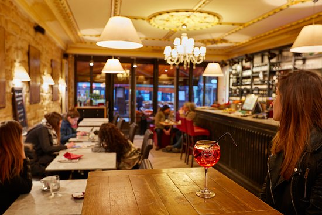

Café Fontenebleu (Foto: Daniel Moretti)
Omelete protéica: se você esta indo para seu treino. o ideal é incluir
proteinas em suas receitas no café da manhã, para garantir a energia
necessária. Para tanto, você pode apostar nesta omelete protéica. O
recheio é feito com frango desfiado e queijo branco e o whey é utilizado
para dar um up nos nutrientes.
Salada de frutas com iogurte grego: se você não quer abrir mão de um
sabor docinho no seu café da manhã, que tal preparar uma salada de
frutas? Esta é deliciosa e utiliza a cúrcuma para dar sabor e deixar a
salada ainda mais saudável.
Café cremoso: café é a bebida perfeita para começar o dia, não é? Este
café fica incrível. O resultado é cremoso e delicioso, de beber rezando
e ainda pedir bis.
Cuscuz de milho: este é um prato muito comum no Nordeste. Feito com
flocos de milho, esse cuscuz pode ser acompanhado por queijos, ovo
mexido, carnes e até mesmo leite com açúcar.
Bolo de leite: para encerrar esse café da manhã tão delicioso, nada
melhor do que um bolo simples de leite. O modo de preparo é muito fácil,
basta bater todos os ingredientes no liquidificador e levar a massa ao
forno. O resultado é um bolo com consistência parecida com a de pudim e
muito saboroso.
Café Fontenebleu localizado na Rua Graciosa, 902, Merces, Curitiba/PR